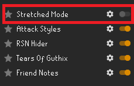
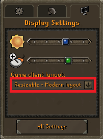

If stretched mode is on, set to off.

Use resizable modern or classic resizable layout

Set zoom between the 3-4 notch.
Remember username must be unchecked.
Turn inventory tags ON and tag the runes in the inventory with the opacity set to 100. If using the resizable modern layout, the inventory must be CLOSED when the bot is started
Tag an NPC with RuneLite's NPC indicator
Turn the minimap OFF to prevent the bot from clicking the indicated NPC on the minimap
The bots runtime can be limited by clicking set splash time
The bot can be set to autologin and attack by entering a username and password and clicking the auto login option.
The splash timer can be set to a preset time by clicking the button in the left corner
Or the second set of variables option can be chosen from the extra tab
If autologin is selected the following options highlighted in red must be filled out